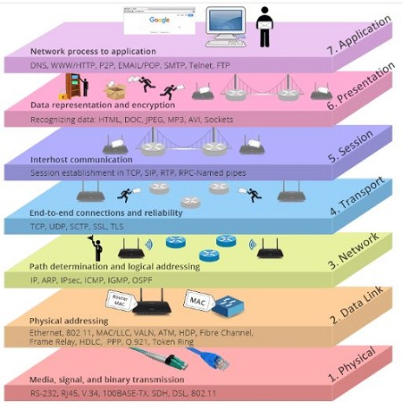
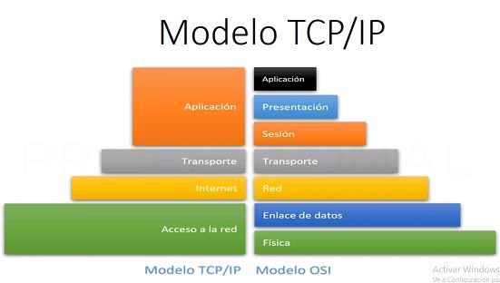
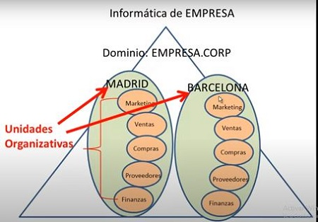

| Referencia | Descripcion | Ejemplo |
|---|---|---|
| Modelo OSI |
1. Cuando la informacion se va a enviar la data va de la capa de 7-1. 2. Cuando la informacion se va a recibir la data va de la capa 1-7. 3. Del modelo TCP/IP surgio del modelo OSI ** Enviando un mensaje ** 7. la capa de aplicación es el software donde queremos enviar el mensaje por ejemplo WhatsApp. 6. la capa de Presentacion reconoce el formato de la data que se quiere enviar en este caso reconoce que es un texto. 5. la capa de Session inicia la comunicacion entre nuestro dispositivo y el servidor de WhatsApp inidcandole quien y que va a enviar y si las credenciales y protocoles esta bien entre estos dos se continua con la siguiente capa. 4. la capa de Transporte divide la data para ser enviada 3. la capa de Red empaqueta la data. 2. la capa de Enlace de datos convierte los anteriores paquetes en datos binarios. 1. la capa Fisica son los medios o perifericos por donde se transmite la información "cables, routes, stwitchs, conectores... etc". ** Recibiendo un mensaje ** Son los mismos pasos pero al reves del 1- 7 |
  |
| la infrestructura logica del Directorio activo |
para entenderlo debemos tener en cuenta sus componentes * Dominio: Es una frontera de control y seguridad y en cada dominio va a existir una cuenta de usuario que va a ser el Administrador de dominio y para que exista este dominio debe existir por lo menos un CONTROLADOR DE DOMINIO DC o dos para la tolerancia a fallos cada empresa tiene sucursales "Unidad Organizativa" y en cada sucursal tiene departamentos |
 |